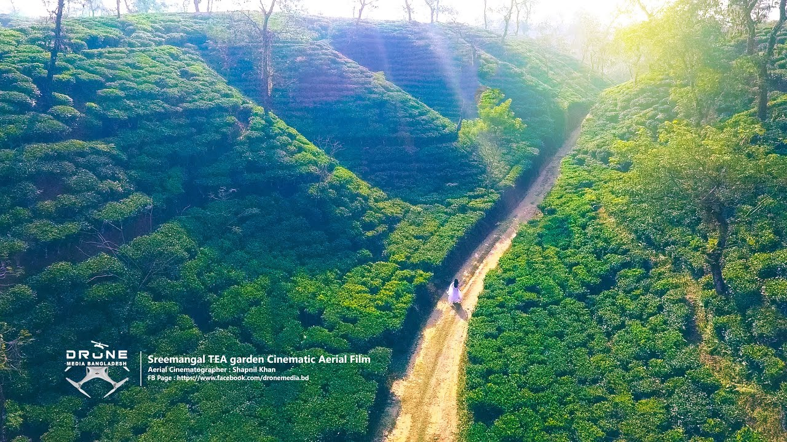

Srimangal is renowned for its sprawling tea gardens, rolling hills, and stunning natural landscapes. Often referred to as the 'Tea Capital of Bangladesh', it is the perfect destination for nature lovers and those looking to escape the hustle and bustle of city life.
Visitors can enjoy tea plantation tours, nature walks, and the rich biodiversity of the Lawachara National Park, which is home to various species of wildlife, including the endangered hoolock gibbons. Srimangal offers a peaceful retreat with its serene environment and picturesque views.
Learn more about Srimangal.